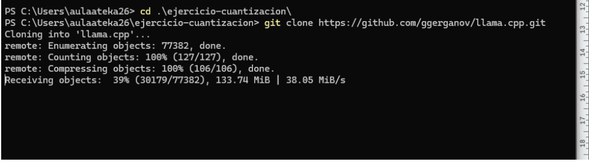
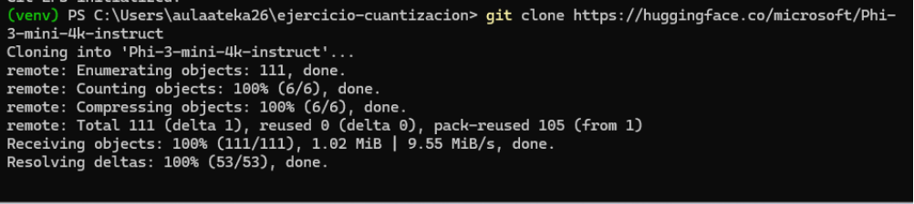
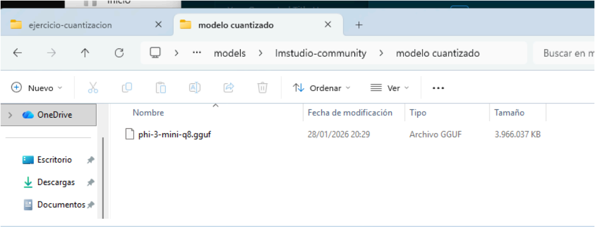
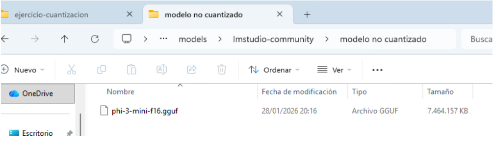
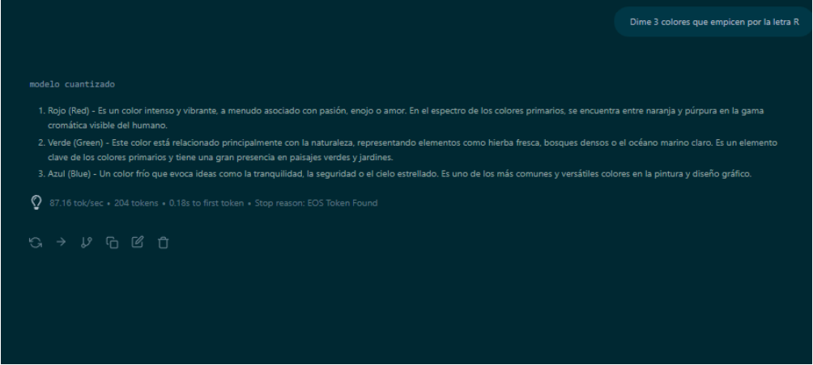
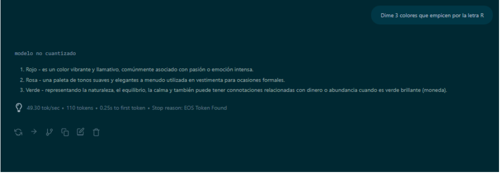

1. Prerrequisitos y Preparación del Entorno
Para trabajar con Inteligencia Artificial localmente en Windows, es vital tener las versiones correctas de las herramientas. El error más común es usar una versión de Python demasiado nueva.
Debes usar Python 3.11. Versiones más recientes como la 3.13 fallarán al instalar librerías. Revisa la sección final de "Errores Comunes" para ver cómo identificar esto.
Comandos iniciales (PowerShell)
Creamos nuestra carpeta de trabajo y clonamos el repositorio de herramientas de conversión:
cd C:\
mkdir ejercicio-cuantizacion
cd ejercicio-cuantizacion
git clone https://github.com/ggerganov/llama.cpp.git
Crear el Entorno Virtual
Aislamos nuestras dependencias para no ensuciar el sistema operativo:
python -m venv venv
.\venv\Scripts\Activate.ps1
pip install -r llama.cpp/requirements.txt2. Descargar el Modelo Original
Necesitamos descargar el modelo base desde Hugging Face. Estos archivos son pesados (~7.5 GB), por lo que necesitamos habilitar Git LFS (Large File Storage).
git lfs install
git clone https://huggingface.co/microsoft/Phi-3-mini-4k-instruct
3. Fase 1: Conversión a Formato GGUF (Calidad F16)
El script de Python de llama.cpp solo puede convertir el formato, no comprimirlo a 4 bits de forma nativa. Por lo tanto, el primer paso es pasarlo a un archivo GGUF de alta precisión (F16).
python llama.cpp/convert_hf_to_gguf.py .\Phi-3-mini-4k-instruct\ --outtype f16 --outfile phi-3-mini-f16.ggufAl finalizar, tendrás un archivo llamado phi-3-mini-f16.gguf que pesará aproximadamente 7.4 GB.
4. Fase 2: Cuantización a 4 Bits (La Compresión)
Para reducir el modelo de 7.5 GB a ~2.3 GB sin perder mucha precisión, necesitamos usar el binario en C++ llama-quantize.exe.
Script Automático de Descarga y Ejecución
Este script descarga el paquete completo compatible con procesadores modernos (AVX2), lo extrae y ejecuta la compresión:
# 1. Descargar paquete completo
$url = "https://github.com/ggerganov/llama.cpp/releases/download/b4648/llama-b4648-bin-win-avx2-x64.zip"
Invoke-WebRequest -Uri $url -OutFile "paquete_llama.zip"
# 2. Extraer TODO en una carpeta (vital para mantener las .dll junto al .exe)
Expand-Archive -Path "paquete_llama.zip" -DestinationPath "herramientas" -Force
Remove-Item "paquete_llama.zip"
# 3. Ejecutar la cuantización
.\herramientas\llama-quantize.exe phi-3-mini-f16.gguf phi-3-mini-q4.gguf q4_k_m5. Verificación Final
Para confirmar que todo el proceso ha sido un éxito, listamos los archivos GGUF resultantes para comparar sus tamaños:
ls *.ggufphi-3-mini-f16.gguf: ~7.6 GB (El original convertido)phi-3-mini-q4.gguf: ~2.3 GB (¡Nuestro objetivo logrado!)




6. Anexo: Diario de a Bordo (Errores Reales y Soluciones)
Durante la ejecución en un entorno real de Windows 11, nos encontramos con varios problemas comunes. Aquí están los errores literales y cómo los solucionamos.
🛑 Error 1: "Unknown compiler" al instalar librerías
..\meson.build:1:0: ERROR: Unknown compiler(s): [['icl'], ['cl'], ['cc'], ['gcc'], ['clang']]
error: subprocess-exited-with-error
× Preparing metadata (pyproject.toml) did not run successfully.Causa: Estábamos usando Python 3.13. Al ser tan nuevo, la librería numpy no tenía binarios precompilados e intentó usar C++ para construirse desde cero.
Solución: Desinstalamos Python 3.13, instalamos Python 3.11, borramos la carpeta del entorno virtual anterior (Remove-Item -Recurse -Force venv) y lo creamos de nuevo.
🛑 Error 2: El script de Python no existe
python.exe: can't open file '...\llama.cpp\convert-hf-to-gguf.py':